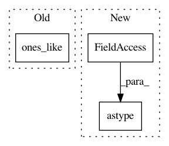

ad66bf0a8faf1f230891faea92c31d8a3a0baa3f,niftynet/engine/sampler_selective.py,,create_probability_weights,#Any#Any#,213
Before Change
for (e_s, e_e, size) in zip(e_start, e_end, proba_hist):
candidates_proba = np.where((possible_mean_count >= e_s) *
(possible_mean_count < e_e),
size * np.ones_like(candidates),
candidates_proba)
proba_weight = np.multiply(proba_weight, candidates_proba)
print("Finished probability calculation")
After Change
for (e_s, e_e, size) in zip(e_start, e_end, proba_hist):
prob_selector = \
(possible_mean_count >= e_s) & (possible_mean_count < e_e)
candidates_proba[prob_selector.astype(np.bool)] = size
proba_weight = np.multiply(proba_weight, candidates_proba)
print("Finished probability calculation")
return np.divide(proba_weight, np.sum(proba_weight))
In pattern: SUPERPATTERN
Frequency: 3
Non-data size: 3
Instances
Project Name: NifTK/NiftyNet
Commit Name: ad66bf0a8faf1f230891faea92c31d8a3a0baa3f
Time: 2017-10-04
Author: wenqi.li@ucl.ac.uk
File Name: niftynet/engine/sampler_selective.py
Class Name:
Method Name: create_probability_weights
Project Name: NifTK/NiftyNet
Commit Name: ad66bf0a8faf1f230891faea92c31d8a3a0baa3f
Time: 2017-10-04
Author: wenqi.li@ucl.ac.uk
File Name: niftynet/engine/sampler_selective.py
Class Name:
Method Name: candidate_indices
Project Name: dmlc/gluon-nlp
Commit Name: 1f9ad444b5dee8b2562b7bfa1cf9f576fa32a347
Time: 2020-07-31
Author: 37728728+ZheyuYe@users.noreply.github.com
File Name: src/gluonnlp/op.py
Class Name:
Method Name: updated_vectors_by_position